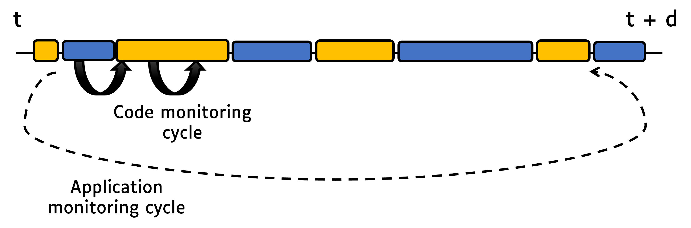

Overview
JoularJX is part of the  project.
project.
JoularJX is a Java-based agent for power monitoring at the source code level with support for modern Java versions and multi-OS to monitor power consumption of hardware and software.
JoularJX is a Java agent where you can simply hook it to the Java Virtual Machine when starting your Java program. To get power readings, JoularJX uses a custom PowerMonitor program (based on Intel Power Gadget API) on Windows, Intel RAPL (through powercap) on GNU/Linux, Powermetrics on macOS, and our accurate power models on Raspberry Pi and similar devices.
JoularJX is the successor of Jalen, and the core approach of statistical sampling is based and inspired by the work we did in monitoring energy hotspots in software (ASE 2012 conference paper, and ASE Journal paper in 2015).
The official website of JoularJX is: https://www.noureddine.org/research/joular/joularjx.
Features
- Monitor power consumption of each method at runtime
- Monitor the evolution of power consumption of each method
- Monitor power consumption of methods' call tree and execution branches
- Uses a Java agent, no source code instrumentation needed
- Uses Intel RAPL (powercap interface) for getting accurate power reading on GNU/Linux, our research-based regression models on Raspberry Pi devices, and a custom program monitor (based on Intel Power Gadget) for accurate power readings on Windows
- Provides real-time power consumption of every method in the monitored program
- Provides total energy for every method on program exit
Cite this work
To cite our work in a research paper, please cite our paper in the 18th International Conference on Intelligent Environments (IE2022).
- PowerJoular and JoularJX: Multi-Platform Software Power Monitoring Tools. Adel Noureddine. In the 18th International Conference on Intelligent Environments (IE2022). Biarritz, France, 2022.
@inproceedings{noureddine-ie-2022,
title = {PowerJoular and JoularJX: Multi-Platform Software Power Monitoring Tools},
author = {Noureddine, Adel},
booktitle = {18th International Conference on Intelligent Environments (IE2022)},
address = {Biarritz, France},
year = {2022},
month = {Jun},
keywords = {Power Monitoring; Measurement; Power Consumption; Energy Analysis}
}
License
JoularJX is licensed under the GNU GPL 3 license only (GPL-3.0-only).
Copyright (c) 2021-2023, Adel Noureddine, Université de Pau et des Pays de l'Adour. All rights reserved. This program and the accompanying materials are made available under the terms of the GNU General Public License v3.0 only (GPL-3.0-only) which accompanies this distribution, and is available at: https://www.gnu.org/licenses/gpl-3.0.en.html
Author : Adel Noureddine
Supported Platforms
JoularJX support the following platforms and operating systems:
- PC/Servers using a RAPL supported Intel processor (since Sandy Bridge) or a RAPL supported AMD processor (since Ryzen), on GNU/Linux, on Windows and on macOS.
The supported list of Raspberry Pi and Asus Tinker Board models are listed below. We support all revisions of each model lineup. However, the model is generated and trained on a specific revision (listed between brackets), and the accuracy is best on this particular revision.
- Raspberry Pi devices (multiple models) on GNU/Linux:
- Model Zero W (rev 1.1), for 32 bits OS
- Model 1 B (rev 2), for 32 bits OS
- Model 1 B+ (rev 1.2), for 32 bits OS
- Model 2 B (rev 1.1), for 32 bits OS
- Model 3 B (rev 1.2), for 32 bits OS
- Model 3 B+ (rev 1.3), for 32 bits OS
- Model 4 B (rev 1.1, and rev 1.2), for both 32 bits and 64 bits OS
- Model 400 (rev 1.0), for 64 bits OS
- Model 5 B (rev 1.0), for 64 bits OS
- Asus Tinkber Board (S)
| Platform | Supported OS | Based on | Supported Architecture |
|---|---|---|---|
| Linux PC/Server | GNU/Linux | RAPL (using powercap) | x86, x86_64 |
| Windows PC/Server | Windows | Intel Power Gadget API | x86, x86_64 |
| macOS PC | macOS | Powermetrics | x86_64, ARM |
| Raspberry Pi | GNU/Linux | Our regression models | ARM |
| Asus Tinker Board | GNU/Linux | Our regression models | ARM |
Installation
JoularJX is a Java agent, and therfore provided as a .jar file.
Just use the compiled jar package for JoularJX.
You can also run the installation script in the install/ folder:
- On Windows, run in a command line:
windows-install.bat. This will install JoularJX jar and ProgramMonitor toC:\joularjx. - On GNU/Linux, run in a terminal:
sh linux-install.sh. This will install JoularJX to/opt/joularjx. - on macOS, we don't provide a quick installation script, but you follow the compilation instructions.
JoularJX requires a minimum version of Java 11+.
On Windows, JoularJX uses a custom power monitor program that uses Intel Power Gadget API on Windows, and therefore require installing the Intel Power Gadget tool and using a supported Intel CPU.
On x86_64 Linux, JoularJX uses Intel RAPL interface through powercap, and therefore requires running on an Intel CPU or an AMD Ryzen CPU.
On supported ARM Linux, JoularJX uses our own research-based regression models to estimate CPU power consumption with support for the following, therefore not requiring any additional dependencies.
On macOS, JoularJX uses Powermetrics, a tool bundled with the OS.
Quick Usage
JoularJX is a Java agent where you can simply hook it to the Java Virtual Machine when starting your Java program's main class:
java -javaagent:joularjx-$version.jar YourProgramMainClass
If your program is a JAR file, then just run it as usual while adding JoularJX:
java -javaagent:joularjx-$version.jar -jar yourProgram.jar
JoularJX will generate multiple CSV files according to the configuration settings (in config.properties), and will create these files in a joularjx-resultsfolder.
Compilation
To build JoularJX, you need Java 11+ and Maven, then just build:
mvn clean install -DskipTests
Alternatively, you can use the Maven wrappen shipped with the project with the command:
Linux and macOS: ./mvnw clean install -DskipTests
Windows: mvnw.cmd clean install -DskipTests
To compile the Windows power monitor tool, required by JoularJX on Windows, open the project in Visual Studio and compile there. Or open, Developer Command Prompt for VS (or Developer PowerShell for VS), and compile with this command:
msbuild.exe PowerMonitor.sln /property:Configuration=Release
Configuration Properties
JoularJX can be configured by modifying the config.properties files:
filter-method-names: list of strings which will be used to filter the monitored methods (see Generated files below for explanations).save-runtime-data: write runtime methods power consumption in a CSV file.overwrite-runtime-data: overwrite runtime power data files, or if set to false, it will write new files for each monitoring cycle.logger-level: set the level of information (by logger) given by JoularJX in the terminal (allowed values: OFF, INFO, WARNING, SEVERE).powermonitor-path: Full path to the power monitor program (only for Windows).track-consumption-evolution: generate CSV files for each method containing details of the method's consumption over the time. Each consumption value is mapped to an Unix timestamp.hide-agent-consumption: if set to true, the energy consumption of the agent threads will not be reported.enable-call-trees-consumption: compute methods call trees energy consumption. A CSV file will be generated at the end of the agent's execution, associating to each call tree it's total energy consumption.save-call-trees-runtime-data: write runtime call trees power consumption in a CSV file. For each monitoring cycle (1 second), a new CSV file will be generated, containing the runtime power consumption of the call trees. The generated files will include timestamps in their names.overwrite-call-trees-runtime-data: overwrite runtime call trees power data file, or if set to false, it will write new file for each monitoring cycle.
You can install the jar package (and the PowerMonitor.exe on Windows) wherever you want, and call it in the javaagent with the full path.
However, config.properties must be copied to the same folder as where you run the Java command.
Generated Files
JoularJX will generate multiple CSV files according to the configuration settings (in config.properties), and will create these files in a joularjx-resultsfolder.
The generated files are available under the following folder structure:
- joularjx-results
- appName-PID-start_timestamp
- all (power/energy data for all methods, including the JDK ones)
- runtime (power consumption every second)
- calltree (consumption for each call tree branch)
- methods (consumption for each methods)
- total (total energy consumption, generated at the program's end)
- calltree
- methods
- evolution (power consumption evolution of every method, throughout the execution of the application)
- runtime (power consumption every second)
- app (power/energy data for methods of the monitored application, according to the
filter-method-namessetting)- runtime
- calltree
- methods
- total
- calltree
- methods
- evolution
- runtime
- all (power/energy data for all methods, including the JDK ones)
- appName-PID-start_timestamp
The folder structure is summarized in the following figure:

For real-time power data or the total energy at the program exit, JoularJX generated two CSV files:
- A file which contains power or energy data for all methods, which include the JDK's ones.
- A filtered file which only includes the power or energy data of those filtered methods (can be configured in
config.properties). This data is not just a subset of the first data file, but rather a recalculation done by JoularJX to provide accurate data: methods that start with the filtered keyword, will be allocated the power or energy consumed by the JDK methods that it calls.
For example, if Package1.MethodA calls java.io.PrintStream.println to print some text to a terminal, then we calculate:
- In the first file, the power or energy consumed by
printlnseparately fromMethodA. The latter power consumption won't include those consumed byprintln. - In the second file, if we filter methods from
Package1, then the power consumption ofprintlnwill be added toMethodApower consumption, and the file will only provide power or energy ofPackage1methods.
We manage to do this by analyzing the stacktrace of all running threads on runtime.
Integration with Systems and Tools
JoularJX is a Java agent, and the compiled JAR file have no external dependencies. Therefore, it can be integrated and used in any Java-based virtual machine and setup.
For instance, you can add JoularJX to the run/execute parameters of your favorite IDE (Eclipse, IntelliJ Idea, NetBeans, etc.), or to your development workflow or continuous integration and delivery processes (CI/CD).
JoularJX runs indistinctly and with the same configuration options and generated files on all supported platforms, from Windows to Linux, from x86_64 servers and PC to ARM Raspberry Pi devices.
How JoularJX Works
JoularJX is a Java agent that hooks to the Java Virtual Machine (JVM) on startup along with the monitored application. It runs in a separate thread and collects information about CPU usage of the JVM process, each thread running in the JVM, and then for each method of the application.
JoularJX is the successor of Jalen, and the core approach of statistical sampling is based and inspired by the work we did in monitoring energy hotspots in software (ASE 2012 conference paper, and ASE Journal paper in 2015). JoularJX version 1 is described in our newer research paper at the IE 2022 conference.
The general architecture of JoularJX is summarized in the following figure:

The monitoring process is as follows:
- Every application monitoring cycle (by default, 1 second), JoularJX collects the CPU usage of the JVM and calculates the power consumption of the entire JVM (on Windows, using the PowerMonitor.exe program using Intel API, on x86_64 Linux using RAPL interface in the Linux kernel, and on Raspberry Pi and Asus Tinker Board using our regression power models).
- Then, JoularJX collects the CPU usage of each thread in the JVM using the JDK's
getThreadCpuTimemethod, and calculates the power consumption of each thread. - Every source code monitoring cycle (by default, 10 milliseconds), JoularJX checks, for each thread, the stacktrace and identify the method being executed (the method on top of the stacktrace). At the end of the application monitoring cycle, JoularJX statistically analyzes the ratio of each method observed in the stacktrace, and allocate the power consumption accordingly as seen in the following figures:


Usually the method on the top of the stacktrace is a method from the JDK.
For example, calling System.out.println() from the application's method Main will call other methods from the JDK (such as buffers, writeln, etc.).
JoularJX will verify, when checking the stacktrace, if the method is called, anywhere in its call tree, by a method from the application we wish to monitor, and thus isolate these statistics from methods called by other applications or by the JoularJX agent itself.
During these monitoring cycles, JoularJX not only identify the method being executed, but also its execution branch (all the methods calling it), and can provide power and energy consumption for each execution branch as seen in the following figures:

JoularJX will also automatically calculate the power consumption for each method, for each timestamp, thus allowing to trace the power consumption evolution of each method, as seen in the following figure: